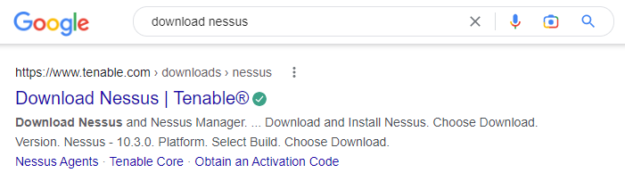

Scanning With Nessus
- Nessus is a vulneralbility scanner
- Pen-testers and ethical hackers use this
- Good for external assessments where you can send email notofications to the client to let them know that the penetration is about to satrt
- You can automate the scans - what time to start etc
- While you let the scans run you can be gathering more information - scans take really long to comeplete!
Nessus Installation
First we need to download the app from the Tenable website.

Select the link from the Tenable website.
When we search for the Ubuntu deb 64-bit package - look for the Linux - Ubuntu - amd64.

You can download and save the package
With the package downloaded we need to go to the terminal to install it. In the terminal, navigate to the Downloads folder (or whichever folder you saved the package to).
dpkg -i Nessus-10.3.0-ubuntu1404_amd64.deb

To start the Nesus tool run the following in the terminal: /bin/systemctl start nessusd.service.
Click on the link or enter https://kali:8834/ in the web browser.

A loading page will appear after enetring the web address.
You will need to create an account to start using the app.